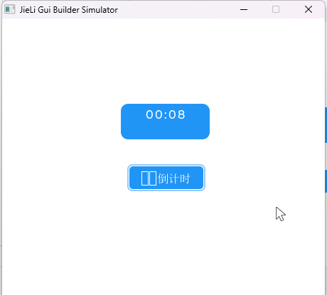
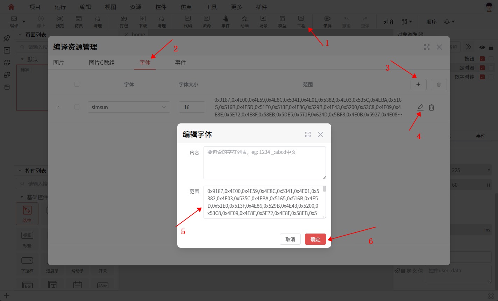

编译问题
本章目录
- 1. 编译出现 Error occurred during initialization of VM 错误
- 2. 编译出现 The C compiler identification is unknown 错误
- 3. 编译成功，但是仿真程序闪退
- 4. 打包失败，提示转换图片资源失败
- 5. 相同图片，却生成了多个图片资源
- 6. 通过自定义代码修改控件文本后出现部分字体乱码显示不全
本章正文
编译出现 Error occurred during initialization of VM 错误
- 原因：UI工具自带的JRE工具链出现问题，部分文件被删除或者损坏。
- 解决方法：重新安装UI工具，或者重新安装JRE。
提示
在使用一些杀毒软件清理大文件时，可能会误删JRE的一些文件（如：rt.jar）,导致UI工具无法正常编译。
编译出现 The C compiler identification is unknown 错误
- 原因：UI工具自带的编译器
mingw730出现问题，部分文件被删除或者损坏。 - 解决方法：重新安装UI工具。
提示
如果重新安装UI工具后，问题依旧存在，请在UI工具上反馈给我们。
编译成功，但是仿真程序闪退
- 原因1：缺少相关的资源文件（字体、图片等），仿真程序读取资源文件失败，导致闪退。
- 解决方法：请先检查是否有进行“打包”操作，如果有，请检查打包是否成功，资源文件是否存在。
// 可能出现的错误信息
[Error] (8729.953, +0) lv_font_load_bin: lv load file data from flash error (in lv_font_loader_bin.c line #36)
[Error] (8729.953, +0) lv_font_montserratMedium_22_file: Load Fnt Font Failed A:\ ... \ui_prj\dvr_800x480\ui_res\rle\font\1000000f.rle
(in gui_fonts.c line #287)
- 原因2：程序逻辑中存在错误，出现访问空指针等问题，导致程序闪退。
- 解决方法：请检查程序逻辑，排查问题。
提示
如果是自动生成的代码（generated目录下的文件）导致的异常，请在UI工具上反馈给我们。
- 原因3：当前项目目录过长，导致程序闪退
- 解决方法：可以将
main.exe所在目录移动到短目录下，检查是否能够正常运行。
打包失败，提示转换图片资源失败
- 原因1：部分图片资源的文件格式不支持。
- 解决方法：可以尝试将转换失败的图片资源，转换为RGBA的PNG格式，再进行打包。或者换其他图片资源。如果有其他问题，请在UI工具上反馈给我们。
// 可能出现的错误信息
pngquant Unable to convert indexed image fileD:\ ... \import\image\video_page\USB\s_PC.png
- 原因2：缺少
VC运行时，导致资源打包工具无法正常工作。 - 解决方法：下载 VC_redist.x86.exe，并安装。
提示
如果安装 VC运行时 后问题仍然存在，可以手动双击打开工具自带的 ResConvBin.exe，查看是否缺少其他系统库。如果程序无法启动或提示缺少 DLL 文件，说明系统环境存在问题。
- 原因3：打包BMP图片提示
Unable to load image file，工具无法正常加载图片。 - 解决方法：尝试修改图片的
bpp位数，如将16改为24。
//将一个BMP图片转换为RGB24格式的图片
ffmpeg -i "bmp_file" -pix_fmt rgb24 -frames:v 1 -update 1 -f image2 "temp_file" -y
相同图片，却生成了多个图片资源
这里以 qrcode.jpg 为例，通过查看 generated/gui_res/res_common.h 文件中，可以看到在这个项目中，使用 qrcode.jpg 生成了三个图片资源。
typedef enum {
GUI_RES_EMPTY_HOME_IMG_2_PNG = 0x4B000000, //E:\workspace\Application46\import\image\empty.png
GUI_RES_QRCODE_JPG = 0x4B000001, //E:\workspace\Application46\lvgl-simulator\board\ui_res\flash\bin\image\4b000001.zip
} GUI_RES_ID;
typedef enum {
RES_QRCODE = 0x74000002, //E:\workspace\Application46\lvgl-simulator\board\ui_res\flash\bin\image\74000002.zip 258x258
} RES_ID;
- 原因：在项目中，当多个控件使用
qrcode.jpg图片资源时，但压缩配置项却有所不同时，那么就会生成多个对应压缩配置的图片资源。比如，上面的GUI_RES_EMPTY_HOME_IMG_2_PNG和GUI_RES_QRCODE_JPG。在工程->图片添加的图片资源，即使图片的压缩配置项相同，也会生成独立的图片资源。上面的RES_QRCODE正是通过工程->图片添加的图片资源。
通过自定义代码修改控件文本后出现部分字体乱码显示不全
- 原因：打包后的字库中没有这部分字体
- 解决方法：手动添加字库

